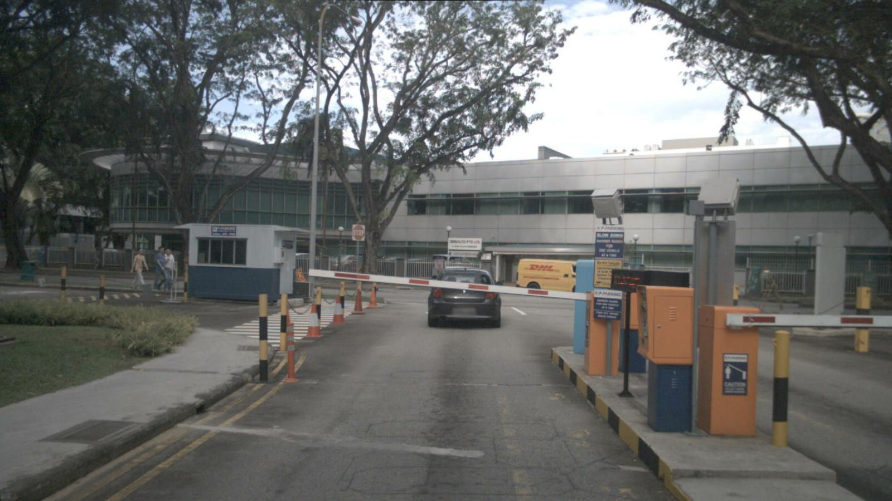
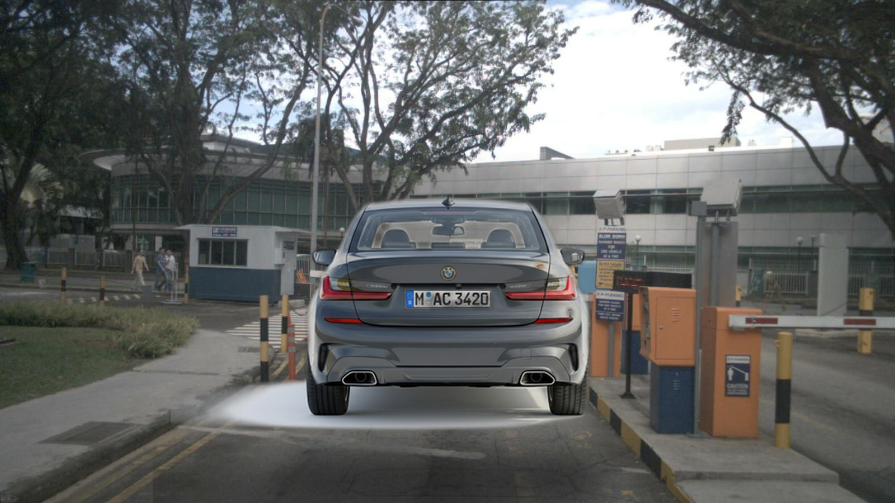
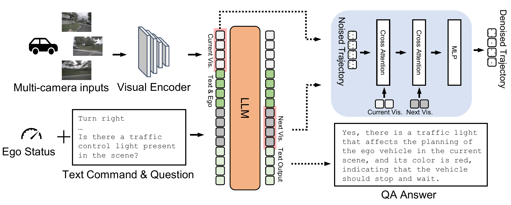
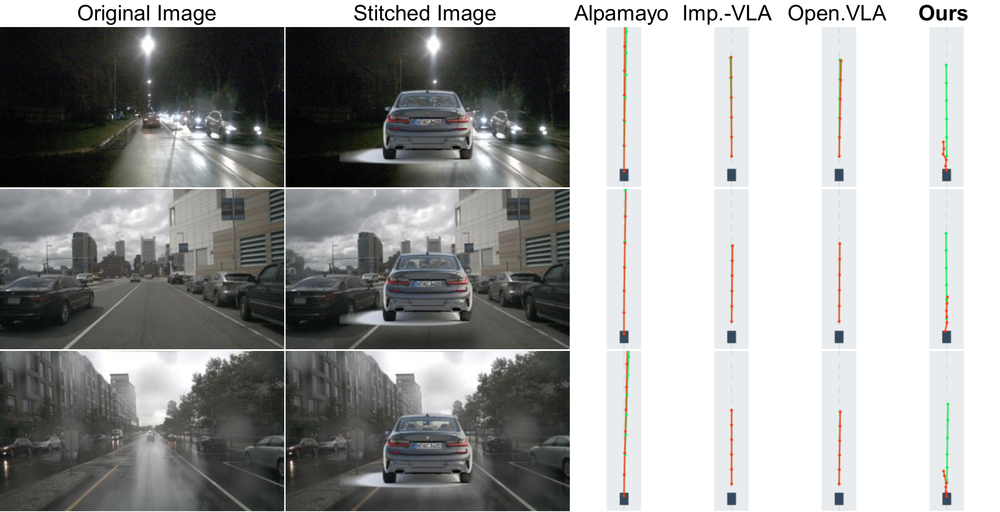

Observe the present
DINOv3 encodes the three front-camera views into current visual tokens.
Current state VtPredict the future scene.
Ground the driving plan in what changes.
KAIST Kim Jaechul Graduate School of AI
Counterfactual visual grounding
Insert a vehicle while holding non-visual inputs fixed. Explore how our model’s predicted trajectory responds.


OriginalObstacle insertedDrag to compare Vehicle placed directly ahead
A near-range obstacle produces a shorter predicted travel distance.
Exact saved predictions (K = 50 means); two illustrative scenes. Dataset means use 6,019 frames. Negative change means a shorter 3 s endpoint range, not a measured braking rate. Far and “Sky · size matched” use the same sprite scale. See the paper’s spatial intervention analysis ↗
The central idea
A camera input does not guarantee a visually grounded driving policy.
Counterfactual obstacle insertion reveals blind planning: representative Driving VLAs can predict nearly the same trajectory even when a vehicle appears directly ahead. Ego status and route commands provide a shortcut on ego-predictable training examples.
We make visual states the interface to action. The language model predicts a future visual state; a separate Inverse Kinematics Network generates a trajectory conditioned only on the current and predicted future visual states. Visual prediction supplies dense supervision, while the architecture removes direct ego-status and text inputs from trajectory decoding.
Counterfactual obstacle insertion exposes blind planning in representative Driving VLAs: their trajectories remain largely unchanged despite a vehicle appearing directly ahead. An empirically calibrated bias–variance analysis identifies how ego-predictable training examples admit a shortcut through ego status and commands. We address this failure with an inverse-kinematics-inspired architecture that anchors trajectory decoding on current and predicted future visual states. First, a next visual state prediction objective that requires the LLM to predict the future visual scene provides dense visual supervision and suppresses shortcut paths. Second, a separate Inverse Kinematics Network (a cross-attention-based conditional diffusion model) that takes only the current and future visual states as input is designed to suppress reliance on ego status and textual shortcuts during trajectory decoding. Our 0.5B model achieves state-of-the-art trajectory planning performance on NAVSIM-v1, NAVSIM-v2, and nuScenes using cameras alone, without LiDAR or a BEV encoder. Against the matched OpenDriveVLA* baseline, it improves NAVSIM PDMS and EPDMS by 19.0 and 20.4 points, respectively. Controlled ablations and intervention analyses support improved use of visual features, with additional benefits from future-state prediction in dynamic situations such as turning.
02 / Approach
An explicit visual interface
between understanding and planning.
DINOv3 encodes the three front-camera views into current visual tokens.
Current state VtThe LLM uses visual tokens, ego context, and route instructions to predict future visual tokens, supervised by the actual future scene.
Predicted state V̂t+ΔA cross-attention diffusion network decodes the trajectory using only the pair of visual states as conditioning inputs.
IK Network Trajectory
Why “inverse kinematics”? The term expresses the idea of inferring a trajectory between a start and a target visual state. It is an architectural analogy, rather than a strict vehicle-dynamics solver.
03 / Evaluation
Camera-only inference.
No LiDAR or BEV encoder in our model.
Our full model scores 92.2 PDMS with a 0.5B backbone. The matched OpenDriveVLA* baseline scores 73.2.
PDMS · higher is better
Ours: SFT → GRPO
Selected camera-based VLAs PDMS / 100
Our full model scores 90.6 EPDMS, improving by 20.4 points over the matched 0.5B baseline.
EPDMS · higher is better
Ours: SFT → GRPO
Selected camera-based VLAs EPDMS / 100
Average L2 error of 0.06 m under the ST-P3 protocol. Under the UniAD protocol, our average L2 error is 0.13 m.
Average L2 error · lower is better
ST-P3 protocol · 1 s, 2 s, 3 s
Selected camera-based VLAs Avg. L2 (m) ↓
Results reported in the supplied paper. OpenDriveVLA* on NAVSIM shares training data, hyperparameters, backbone scale, and the SFT → GRPO schedule with our model; the next-state objective and IK Network differ. The nuScenes OpenDriveVLA result is the reported original baseline, not the NAVSIM matched variant.
| Method | Backbone | NAVSIM-v1 PDMS ↑ | NAVSIM-v2 EPDMS ↑ | nuScenes Avg. L2 (m) ↓ |
|---|---|---|---|---|
| OpenDriveVLA* / OpenDriveVLA | 0.5B | 73.2 | 70.2 | 0.35 |
| AutoVLA | 3B | 89.1 | — | — |
| ReCogDrive | 2B | 89.6 | 83.6 | — |
| DriveVLA-W0 | 7B | 90.2 | 86.5 | — |
| DriveFine | 8B | 91.8 | 89.7 | — |
| Impromptu-VLA | 3B | — | — | 0.30 |
| Ours (SFT) | 0.5B | 90.3 | 89.3 | — |
| Ours | 0.5B | 92.2 | 90.6 | 0.06 |
04 / In motion
The idea, the interventions,
and the driving examples.
Driving clips are selected qualitative examples, with interpolated playback between available camera frames and saved predictions. Clip-level errors are distinct from dataset-level benchmark metrics. Architecture and token-flow animations are explanatory.
05 / Visual grounding
In the obstacle-stitching experiment, our model has a 63.8% deceleration ratio and a −1.04 m average displacement change. The reported baseline changes are much smaller.
nuScenes validation · obstacle stitching experiment. Average displacement change as reported in the paper; negative indicates a shorter predicted endpoint range.

@misc{park2026grounding,
title = {Grounding Driving VLA via Inverse Kinematics},
author = {Park, Junsung and Shim, Hyunjung},
year = {2026},
note = {Preprint}
}